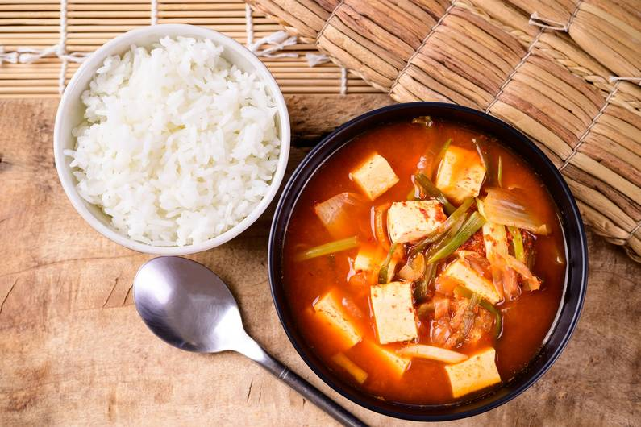

Kimchi Soup ★★★☆☆

Portions
2
Ingredients
| 200 |
g |
Silken Tofu |
| 4 |
pcs |
Spring Onions |
| 150 |
g |
Shiitake |
| 2 |
Pieces |
Garlic |
| 3 |
Tablespoon |
Sesame Oil |
| 150 |
g |
Kimchi |
| 500 |
ml |
Water |
| 2 |
Tablespoon |
Miso Paste |
| 2 |
Teaspoon |
Sesame |
| 2 |
Tablespoon |
Olive Oil |
|
|
Salt |
|
|
Pepper |
|
|
Chilli Flakes |
Steps
-
Place the silken tofu on a plate and place a heavy object on top for 10 minutes to squeeze the liquid out.
-
- Clean the Shiitake mushrooms and slice them into fine stripes.
- Wash the spring onions and cut them into rings.
- Chop the garlic and ginger into small pieces.
-
- Heat 1 tablespoon of olive oil in a pan and fry the Shiitake mushrooms for 2 minutes. Remove them and set them aside.
- Heat the remaining oil (1 tablespoon olive oil + 3 tablespoons sesame oil) to fry the miso paste, spring onions, garlic and ginger.
- Add 500 ml of boiling water and let it cook for another 10 minutes.
- Add the kimchi.
-
- Cut the silken tofu into cubes and add it to the soup.
- Spice up with salt, pepper and chilli flakes
- When serving the soup, add the mushrooms.
Additonal Notes
You can add any herbs of your choice to the soup. Add some toasted bread for a delicious crunch.
Tags
{kind=link}
{kind=link}
{kind=link}
{kind=link}